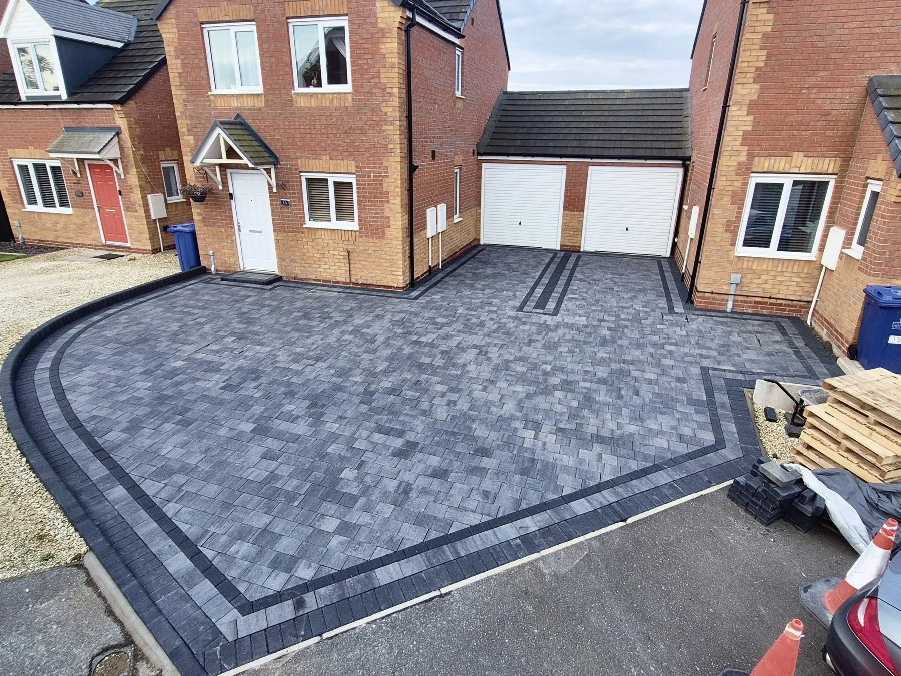

GRIMSBY & SURROUNDING AREAS
See the finish.
Explore the details.
Driveways, patios, paths and garden projects. Tap any image to view it in full.
Driveway specialistsPatios & block pavingFree quotes
PROJECT PHOTOGRAPHS
Take a closer look.
A CLOSER LOOK
Watch us work.
See our driveway and paving projects on video. Press play to take a closer look.
YOUR NEXT OUTDOOR PROJECT
Tell us what
you have in mind.
Driveway, patio and paving quotes in Grimsby and surrounding areas. Send your postcode and a few details to get started.
Photographs of the work and access are always helpful. You can attach them to your message before sending.